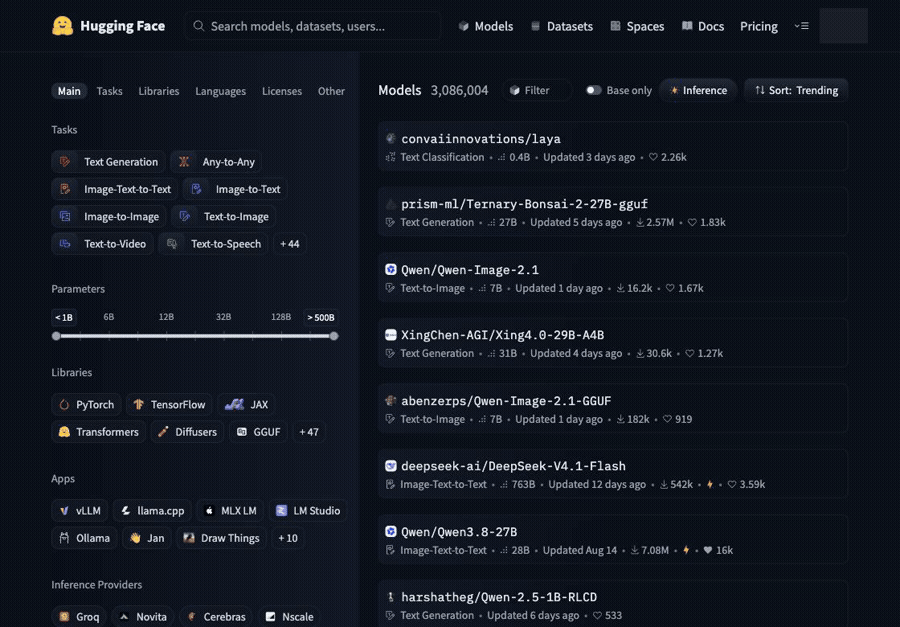
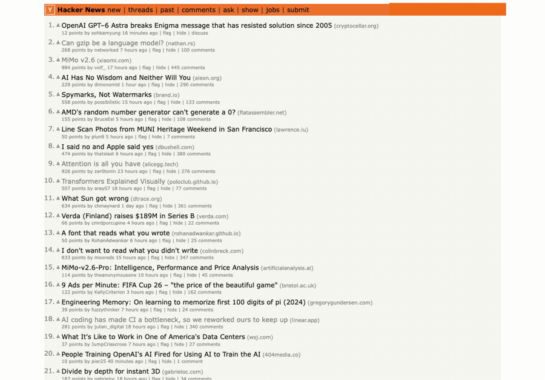
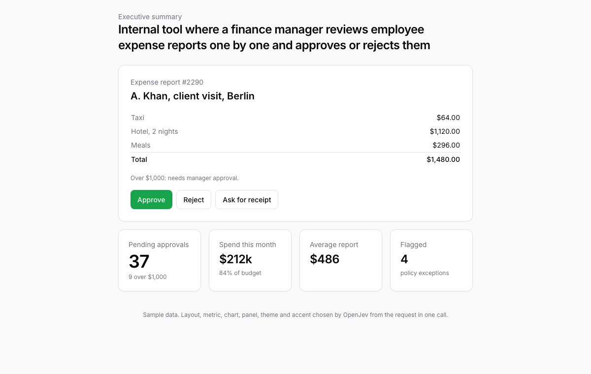
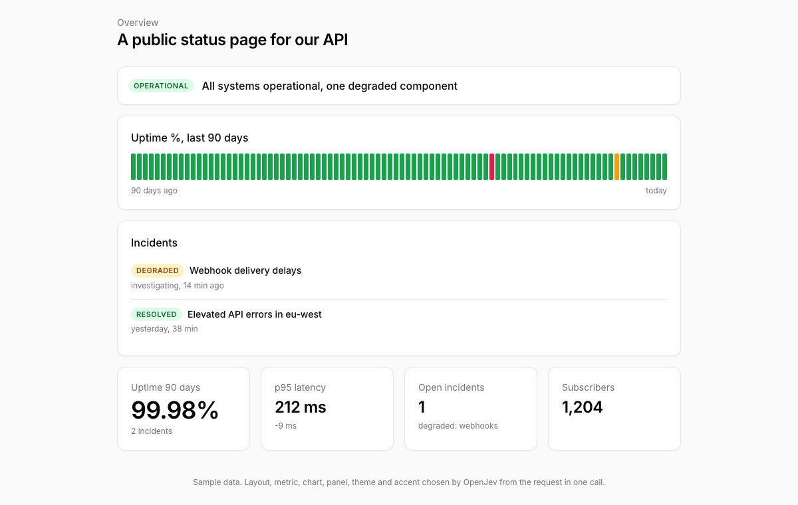
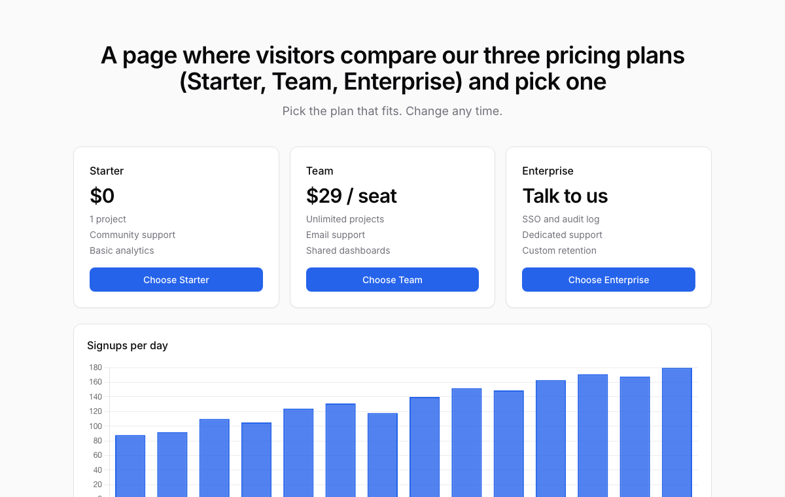
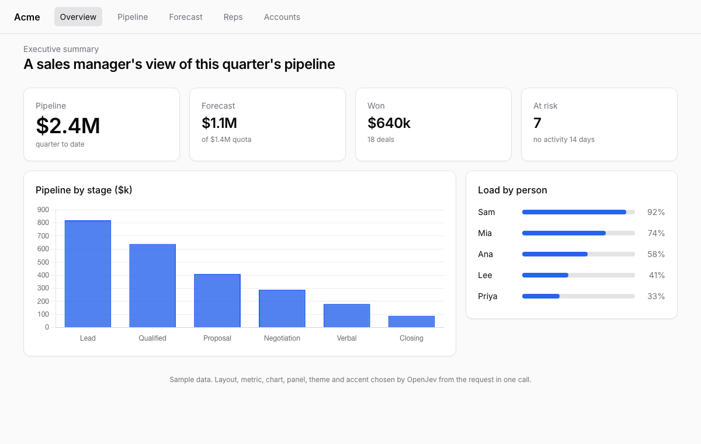
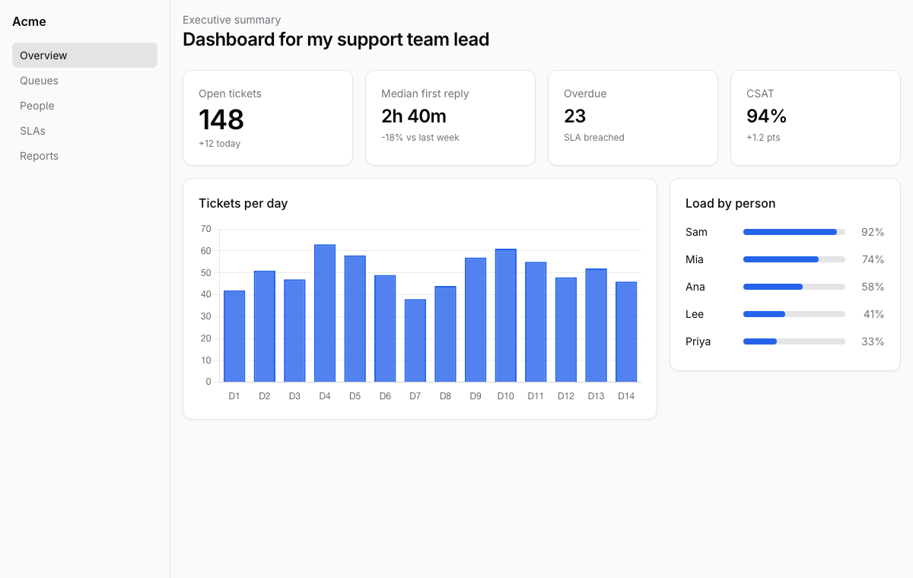
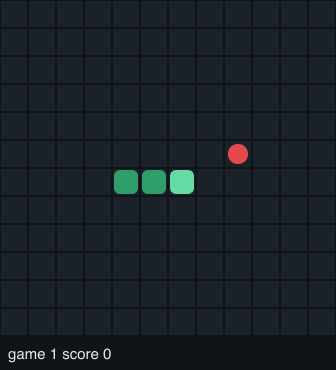

OpenJev demos
Every output here was produced by the real model on this machine (OpenJev MLX 4-bit, Apple M5 Max). Nothing is scripted: each decision is one /v1/systemone call, logged in decisions.jsonl next to the outputs.
Browser agent on the laptop browser_hf

{
"task": "Search the models for openjev and open the openjev-MLX-4bit model page. Stop when that model card is open.",
"start_url": "https://huggingface.co/models",
"final_url": "https://huggingface.co/models?apps=mlx-lm&sort=trending&search=openjev",
"status": "blocked",
"elapsed_ms": 122995,
"actions": 3,
"hardware": "MacBook Pro M5 Max, OpenJev MLX 4-bit",
"note": "typed the search and applied a filter, then repeated a non-changing action three times: the harness stops that as blocked. Not solved on the laptop build."
}Browser agent on the laptop browser_hn2

{
"task": "Open the comments page of the top story on Hacker News. Stop when the comments are visible.",
"start_url": "https://news.ycombinator.com/",
"final_url": "https://news.ycombinator.com/item?id=49801324",
"status": "done",
"elapsed_ms": 53532,
"actions": 1,
"hardware": "MacBook Pro M5 Max, OpenJev MLX 4-bit",
"note": "one click, then the model answered DONE on the comments page"
}Browser agent on the laptop browser_wikipedia
{
"task": "Search Wikipedia for the city Zurich and open its article. Stop when the article about the city of Zurich is open.",
"start_url": "https://en.wikipedia.org/wiki/Main_Page",
"final_url": "https://en.wikipedia.org/wiki/Zurich",
"elapsed_ms": 87710,
"actions": 2,
"decisions": 5,
"hardware": "MacBook Pro M5 Max, OpenJev MLX 4-bit",
"note": "Wikipedia pages are 8k to 21k tokens; each decision is one call with three questions (operation, click target, type target)."
}Chess: OpenJev vs a random mover chess_openjev_vs_random

[Event "openjev-server demo"] [Site "?"] [Date "2026.09.22"] [Round "?"] [White "OpenJev MLX 4-bit"] [Black "random mover"] [Result "1-0"] 1. e4 h6 2. Nf3 a5 3. d4 Nc6 4. Nc3 Nxd4 5. Nxd4 Ra7 6. Bc4 d5 7. exd5 b5 8. Bxb5+ Bd7 9. Bxd7+ Qxd7 10. O-O c6 11. Nxc6 Qh3 12. gxh3 Rb7 13. Nxa5 Kd7 14. Nxb7 e6 15. dxe6+ Ke8 16. Qd8# 1-0
{
"result": "1-0",
"plies": 31,
"termination": "checkmate",
"white": {
"name": "OpenJev MLX 4-bit",
"calls": 16,
"avg_ms": 1162
},
"black": {
"name": "random mover",
"calls": 0,
"avg_ms": 0
},
"final_fen": "3Qkbnr/1N3pp1/4P2p/8/8/2N4P/PPP2P1P/R1B2RK1 b - - 2 16"
}classify_banking77 classify_banking77
{
"dataset": "banking77 test (mteb/banking77 mirror)",
"messages": 300,
"labels": 77,
"accuracy": 0.78,
"top3_accuracy": 0.9233,
"macro_f1": 0.7671,
"majority_baseline": 0.0267,
"avg_ms": 2546,
"messages_per_second": 0.39
}Generative UI: ten dashboard decisions in one call genui






Agent guardrail: is this tool call allowed under the policy? guardrail
{
"cases": 200,
"gold_distribution": {
"deny": 84,
"allow": 89,
"ask_human": 27
},
"decision_accuracy": 1.0,
"pii_accuracy": 0.73,
"denied_calls_the_model_allowed": 0,
"denied_calls_total": 84,
"baselines": {
"majority_class": {
"label": "allow",
"accuracy": 0.445
},
"uniform_random": 0.3333
},
"avg_ms": 974
}Natural-language filters over table rows, eight per call nl_filter
{
"rows": 60,
"predicates": 8,
"row_predicate_accuracy": 0.9208,
"per_predicate": {
"damaged_or_broken": {
"precision": 0.708,
"recall": 1.0,
"accuracy": 0.883,
"positives": 17
},
"premium_over_500": {
"precision": 1.0,
"recall": 1.0,
"accuracy": 1.0,
"positives": 1
},
"delivery_problem": {
"precision": 0.741,
"recall": 1.0,
"accuracy": 0.883,
"positives": 20
},
"recent_30d": {
"precision": 1.0,
"recall": 1.0,
"accuracy": 1.0,
"positives": 19
},
"eu_customer": {
"precision": 1.0,
"recall": 1.0,
"accuracy": 1.0,
"positives": 24
},
"billing": {
"precision": 1.0,
"recall": 1.0,
"accuracy": 1.0,
"positives": 9
},
"electronics_under_200": {
"precision": 0.95,
"recall": 1.0,
"accuracy": 0.983,
"positives": 19
},
"needs_replacement": {
"precision": 0.587,
"recall": 0.871,
"accuracy": 0.617,
"positives": 31
}
},
"avg_ms_per_row": 1771,
"predicates_per_second": 4.5
}Poker: heads-up no-limit hold'em, OpenJev vs a rule bot poker_openjev_vs_random
{
"decisions": 76,
"spearman_strength_vs_equity": 0.752,
"action_by_equity": {
"weak (<40%)": {
"n": 12,
"fold": 0.67,
"raise_or_all_in": 0.08
},
"middle (40-60%)": {
"n": 40,
"fold": 0.68,
"raise_or_all_in": 0.15
},
"strong (>60%)": {
"n": 24,
"fold": 0.12,
"raise_or_all_in": 0.33
}
}
}{
"deals": 25,
"hands": 50,
"chips": {
"OpenJev MLX 4-bit": 118,
"random bot": -118
},
"OpenJev MLX 4-bit": {
"decisions": 76,
"avg_ms": 1352
}
}Poker: heads-up no-limit hold'em, OpenJev vs a rule bot poker_openjev_vs_rulebot
{
"decisions": 127,
"spearman_strength_vs_equity": 0.67,
"action_by_equity": {
"weak (<40%)": {
"n": 38,
"fold": 0.21,
"raise_or_all_in": 0.08
},
"middle (40-60%)": {
"n": 58,
"fold": 0.14,
"raise_or_all_in": 0.26
},
"strong (>60%)": {
"n": 31,
"fold": 0.0,
"raise_or_all_in": 0.52
}
}
}{
"deals": 20,
"hands": 40,
"chips": {
"OpenJev MLX 4-bit": -81,
"rulebot": 81
},
"OpenJev MLX 4-bit": {
"decisions": 127,
"avg_ms": 1679
}
}Poker: heads-up no-limit hold'em, OpenJev vs a rule bot poker_openjev_vs_rulebot_60
{
"decisions": 367,
"spearman_strength_vs_equity": 0.721,
"action_by_equity": {
"weak (<40%)": {
"n": 77,
"fold": 0.38,
"raise_or_all_in": 0.05
},
"middle (40-60%)": {
"n": 147,
"fold": 0.18,
"raise_or_all_in": 0.25
},
"strong (>60%)": {
"n": 143,
"fold": 0.07,
"raise_or_all_in": 0.28
}
}
}{
"deals": 60,
"hands": 120,
"chips": {
"OpenJev MLX 4-bit": -182,
"rulebot": 182
},
"OpenJev MLX 4-bit": {
"decisions": 367,
"avg_ms": 1092
}
}Returns policy: 200 generated cases, exact ground truth policy
{
"cases": 200,
"gold_distribution": {
"deny": 87,
"partial_refund": 23,
"replacement": 23,
"full_refund": 39,
"store_credit": 28
},
"baselines": {
"majority_class": {
"label": "deny",
"accuracy": 0.435
},
"uniform_random": 0.2
},
"days_stated": {
"n": 200,
"outcome_accuracy": 0.935,
"approval_accuracy": 0.965
},
"calendar_dates": {
"n": 200,
"outcome_accuracy": 0.88,
"approval_accuracy": 0.975
},
"avg_ms": 1839
}prompt_injection prompt_injection
{
"messages": 662,
"positives": 263,
"accuracy_at_0.5": 0.9502,
"roc_auc": 0.9949,
"ece_10_bins": 0.0525,
"recall_at_2pct_false_alarm": 0.9772,
"threshold_at_2pct_false_alarm": 0.0885,
"majority_baseline": 0.6027,
"avg_ms": 339
}Recorded on one H100 with the FP8 build (inbox triage, dashboard assembly, Google Flights, shopping, page QA) recorded_gpu
Snake, played live by the model snake

{
"player": "model",
"games": 3,
"scores": [
14,
2,
17
],
"mean_score": 11.0,
"moves": 600,
"wall_s": 561.9,
"avg_ms_per_move": 936,
"moves_per_second": 1.07,
"gif": "demos/out/snake/snake.gif"
}